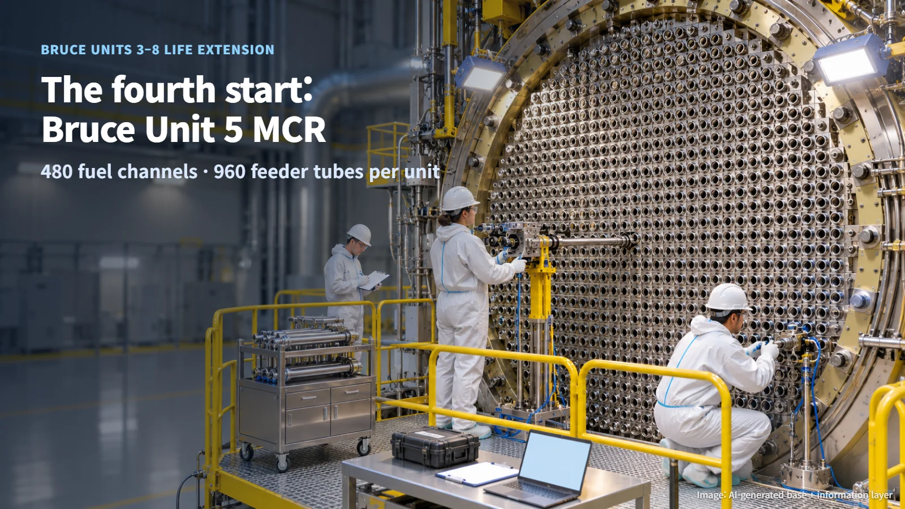
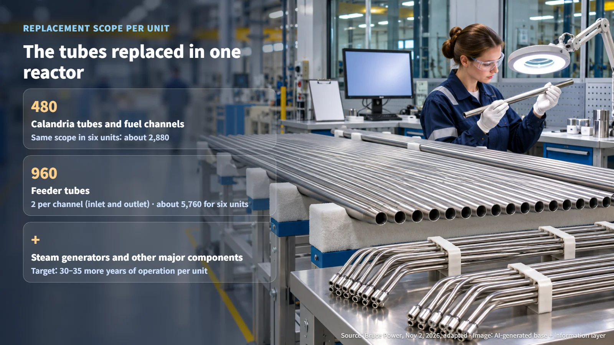
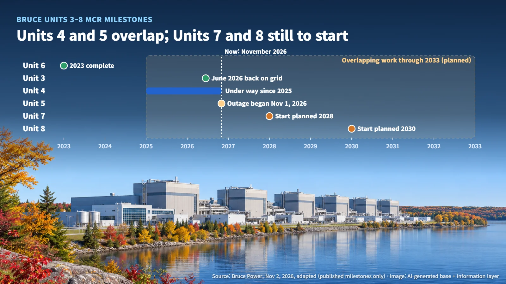

Canada · Life Extension
Six Canadian Reactors, One Long Refurbishment: Bruce Unit 5 Becomes the Fourth to Begin Major Component Replacement
Bruce Unit 5 began its Major Component Replacement outage on November 1, the fourth of Units 3–8, with overlapping work planned through 2033.
Does an aging nuclear reactor have to close for good? At the Bruce site in Ontario, Canada, the answer has been a different one: replace the reactor's core components and keep the plant running for decades more. Last month we looked at how robots installed 480 tubes inside Bruce Unit 4. Now the next unit in the same program has entered its outage, and this time the focus is less on a single reactor and more on the schedule of the program as a whole.

November 1: The Fourth Unit Goes Offline
On November 2, Bruce Power announced that the Major Component Replacement (MCR) outage for Bruce Unit 5 began on November 1. An outage is the period when a reactor is shut down so planned work can be carried out.
The program renews six reactors in sequence, Bruce Units 3 through 8. Unit 6 and Unit 3 have finished their replacement work and Unit 4 is under way, which makes Unit 5 the fourth of the six to begin its replacement. The company said this start marks the program's entry into its later stage.
The program serves two goals: long-term electricity supply and keeping the production base for medical isotopes in place. The title of the announcement also highlighted the role of skilled tradespeople and private funding. With Unit 5 under way, four of the six units have now entered the replacement process, leaving Units 7 and 8 as the two still to start.
What Gets Replaced in One Reactor: 480 Tubes and 960 Pipes
Bruce is a CANDU reactor station. At the heart of a CANDU reactor sits a large cylindrical vessel called the calandria, crossed horizontally by hundreds of tubes. Each of these is a fuel channel that holds fuel bundles and carries cooling water, and each is surrounded by a calandria tube. After many years of operation the tubes age, and replacing them as a full set is the central job of life extension.
According to Bruce Power, the replacement scope for each unit covers 480 calandria tubes and fuel channels, 960 feeder tubes, and other major components such as steam generators. Feeder tubes are the pipes that carry cooling water into and out of each fuel channel.
The relationship between those two numbers reveals the design. Working it out, 960 ÷ 480 = 2, meaning two feeder tubes connect to each fuel channel. In a CANDU reactor, each fuel channel has an inlet pipe at one end and an outlet pipe at the other, so the ratio matches that basic principle.
The scale of the work can be estimated too. If the same scope is replaced in each of the six units, Units 3 through 8, that comes to 480 × 6 = roughly 2,880 fuel channels and 960 × 6 = roughly 5,760 feeder tubes. Because the job repeats the same tasks thousands of times, the procedures and skills built up on earlier units carry over into the quality and pace of the next ones.

An Overlapping Schedule Through 2033
Here is the status of each unit, one line at a time:
- Unit 6: replacement work completed in 2023
- Unit 3: returned to the grid in June 2026
- Unit 4: under way since 2025
- Unit 5: outage began November 1, 2026
- Unit 7: MCR start planned for 2028
- Unit 8: MCR start planned for 2030
(Source: Bruce Power, November 2, 2026 release, adapted)
As of November 2026, Units 6 and 3 are complete and back in service, Units 4 and 5 are both under construction, and Units 7 and 8 are still to begin. At this moment the six reactors fall neatly into three pairs.

The detail that stands out most is that Units 4 and 5 are being worked on at the same time. The company said this kind of overlapping work is planned to continue through 2033. Taking apart and rebuilding two reactors at once on a single site requires specialized workers, equipment and construction experience to move between units without a break. That is why, in a multi-unit program, the allocation of resources and the management of sequence matter as much to the schedule as the technology of any single job.
The Next Checkpoints: Inspection, Acceptance and Return to Service
Unit 5 is now in its outage and replacement work has begun. The target is to extend each reactor's operating life by 30 to 35 years, and that target is reached step by step: component replacement, installation quality inspections, staged acceptance testing, and return to the grid.
Three things are worth watching from here. First, whether Unit 5's major work stages and its inspection and installation milestones are made public. Second, how resources are shared while the Unit 4 and Unit 5 projects overlap, and whether return-to-service dates for each unit shift. Third, whether the starts for Unit 7 in 2028 and Unit 8 in 2030 proceed as planned.
Schedule improvements achieved on earlier units become the starting point for the ones that follow. Each unit passes its own inspection, acceptance and return-to-service conditions, completing life extension one reactor at a time. Bruce's schedule shows that a nuclear plant's lifespan grows with how systematically its core components are replaced and verified.